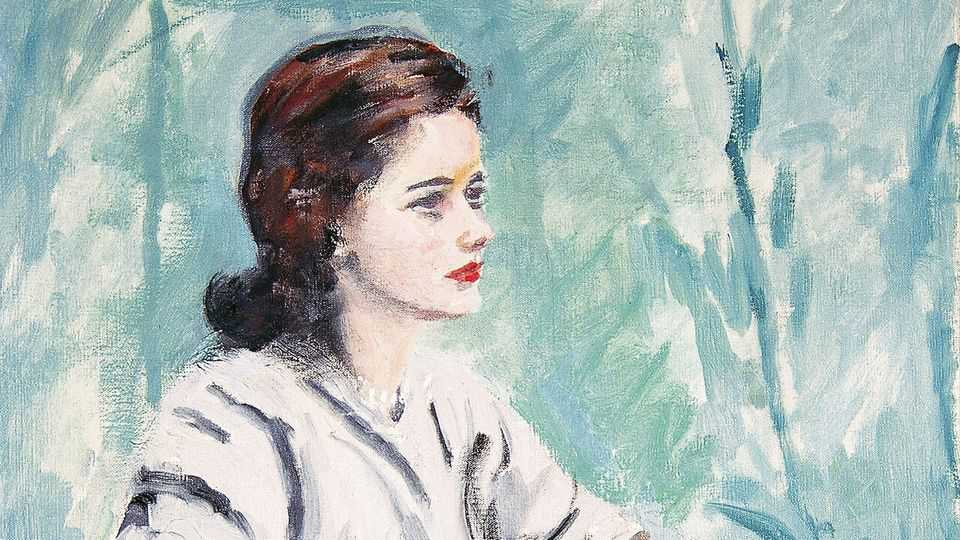

Cecily Gemmell would do almost anything for Churchill
His last personal secretary died on October 8th, aged 97

Oct 29th 2026
Heaven knows why the old man had painted her portrait. He didn’t do many; landscapes were more his style. Perhaps it was a reward for her washing his oil-caked paint brushes, a foul task that made her hands so rough and red. But she was the paints girl, who ordered his colours in for him because at the weekends she was at Chartwell, his country retreat, on duty. Perhaps that was why she looked sad, as well as rather too glamorised, and why she was holding her hands in her lap in that peculiar way.
She suspected that she had just been sitting around when he had the idea. But there certainly wasn’t much idling when one was employed by Mr Churchill. She did four years, covering most of his time as leader of the Opposition before, in 1951, he was prime minister again. She spent a good deal of it feeling utterly exhausted and trembling with fear, whenever she smelt that cigar smoke or heard that rumbling voice, that she was going to annoy the great man in some way. She spent much of the rest of it laughing.
When she first joined, in 1947 at the age of 18, she took months working 9 to 5 to sort his papers out. With not a jot of archive training and usually alone, she was faced with hundreds of black tin boxes and thousands of papers in no order, stowed in a perfectly stifling sub-basement right next to the furnace. The only window was under the front step, so she learned to identify famous visitors by their socks. Anthony Eden’s were pink.
Against anyone’s expectations, she laid the basis of the whole official archive. Her main task for the next three years, however, was “take-down”, typing up from dictation his speeches and the first draft of his war memoirs. Each evening after dinner she would hear that booming voice, like a dinner-gong, calling “Come!” She would leave the office, where the secretaries worked as a little team, take her book and climb the back stairs, to find the old man in the study or, sometimes, in his four-poster bed, which would be a total mess of newspapers, cigars, brandy, ashtrays and the occasional cat. He said: “Good evening. Put your paper in.”
The typewriter sat on a card table next to him. It was a brand-new model, electric, so clack-less, but the action was slow and hard and his flow of words was absolutely constant. He would speak and compose all at once, so driven that she didn’t dare ask him to stop. His speech impediment added to the nightmare. After her first session he came down the next morning and threw her pages on the ground, crying “You haven’t got one word in 50 right!” Worse was when she typed “Never in the field of human conflict” as “Never in the field of human conscience”, a mistake that stung him terribly because, as he tearfully reminded her, that was one of the greatest quotations in the world.
After the shouting, he would quickly start over again. That was what she found marvellous about him. But working with the old man was never exactly easy. When one was sitting ready at the table he might sit reading for an hour or so, often his own works. (“He’s very good, you know.”) Take-down sessions usually lasted til 2 or 3am, and long before that one’s eyes got so bleary that one would have to go downstairs and throw water on one’s face to stay awake. (“Don’t be long!” he would shout.) By that time she couldn’t safely get back to her room in Westerham, the nearest village, so she stayed in the Butler’s Cottage. That still entailed a fearful walk through the steep grounds in the dark, branches in her hair and burrs in her stockings, with the wind howling.
Yet she thought she had been picked for the job because she looked the toughest of the graduates from Mrs Hoster’s Secretarial College for “well-educated women”, where one learned to put three spaces after full stops and other essentials. She had been born in Bangalore, where her father was a map surveyor for the Indian army, and educated at Calcutta’s New School, aka “Harrow on the Hooghly”. Her nickname, “Chips”, came from an uncle killed in the Great War. The old man probably liked that background. At their first meeting, when again he was in bed, she felt bold enough to shake his hand. This, she was told, was not done.
After that, she was readier with her deferential thankyous. With the other girls in the office, though, she could go into fits about him. His awful striped siren suit was his “rompers”. His slow walk (shuffle, shuffle, in his monogrammed slippers) caused hilarity, as well as his voice, which she could imitate from shriek to growl. On one occasion they were so paralysed with giggles that the old man, who was painting in his studio, roared at his sergeant to take them out for a walk.
What did he make of her? Difficult to say. All the secretaries were just “Miss” to him. He would call “Miss!” to wait outside the bathroom door (loud sounds of splashing), so that she could take-down as soon as he came out. When in bed, he would stick his feet out sometimes for her to take off his socks. She was pleased to.
She left when Churchill became prime minister, feeling she would have to be so terribly responsible. For a while she worked as personal secretary to his wife Clementine, which mostly meant shopping for her and chasing up people for lunch. She left Downing Street in 1953 for New York, which she adored, secretarial work for Life and Time Inc and joyful partying in jazz clubs. She was now pretty good at late nights.
At their last meeting, on one of her rare returns, she sat beside Churchill at lunch at Chartwell. As he passed the mustard he scanned her face and asked, “Do I know you?” “Yes,” she replied; “I used to work for you.” “How long for?” “Four years.” “Oh,” came the comment. “What a long time.” ■